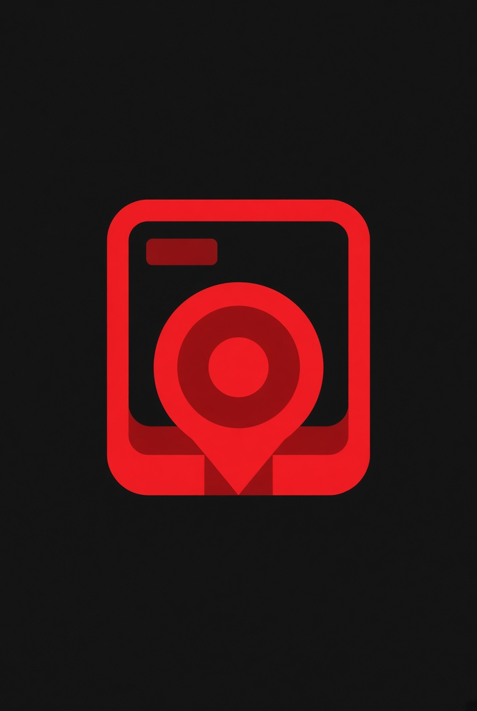

Selecciona un juego
Score: 0

Un escritorio ficticio que vive dentro del navegador. No es un sistema operativo real: es una interfaz web con ventanas y aplicaciones simuladas.
Objetivo: convertir GitHub Pages en un pequeño PC interactivo con paleta negra-roja.